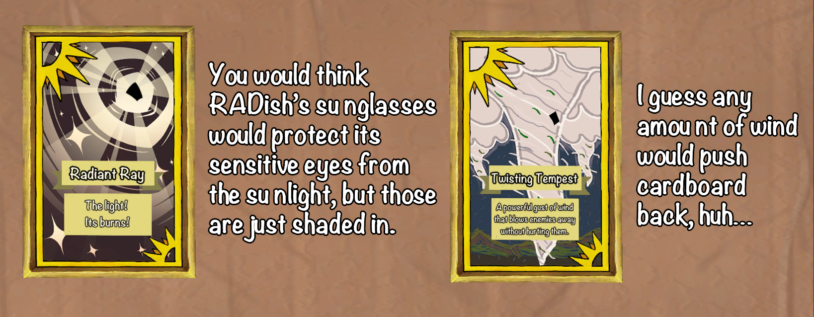

Game Synopsis
Anne and Roki traveled to the town of Endis looking to do some simple trading.
However, their shopping trip is cut short when a group of cardboard creatures
attacks. It's up to them to protect the town and stop this invasion with
flinging magical cards!
Each enemy is weak to a specific type of magical card, meaning you have to throw
the right card at the right enemy to deal the most damage to them before they
can hurt you!
More Info
Platform: PC
Development Engine: Unity
Languages: C#
Source Control: Git
Development Window January 2021 - May 2021 (Spring Semester of 2021)
Group: The Game Analysis and Development Interest Group (GADIG)
What I programmed, designed, and implemented
- General card implementation
- Card throwing mechanics
- Card descriptions
- General Script and dialogue editing
- Layout of the main menu
Other Notes
We actually ended up with more programmers than we needed, so my job for this project
became much more flexible to both program and delegate tasks to other programmers, as
well as aid our now smaller Design Team. Whenever I wasn't working with Design Team or
programming something myself, I was helping teach and assist my programming sub-team
about Unity and overall asset implementation.
My programming sub-team recieved a number of tasks that I would delegate based on
my members' skill and comfort levels, leaving whatever's left to be done by myself.
Thus, I was left with determining the early iterations of a card's trajectory when
thrown towards an enemy.
My Thought Process
I created the foundation of how a card should work, to be built upon throughout
the game's development cycle. The way cards throwing works is as follows:
- Whenever a card is selected (clicked and dragged on), the card would be picked
up and folllow the mouse until it is either thrown or put back in the player's hand.
- If the card is thrown, it's velocity would be computed based on how it was flung,
much like the throwing mechanics of Pokeballs work in the mobile game: Pokemon Go.
I thought of modifying the card's X position based off of where and how quickly the
player moved the card on screen via it's Y position. Velocity would be calculated by
the function:
- If the player did anything else with the card other than throw it, it would go
back to their hand.
Because GADIG's Design Team constantly wanted to alter the card throwing mechanics, they
were ultimeately changed by numerous other team members while I was assigned other work.

Because we eneded up with significantly more programmers than we needed, I as tasked
with not only programming, but also helping Design Team with writing some of the game's
dialogue and writing the card descriptions. I helped write and edit the game's dialogue
to fit the game's fun and light hearted theming. The main challege I had was figuring
out how to write card descriptions in order to hint at what specific enemy types they
should be thrown at while still fitting the game's atmosphere and not being too direct
about it.
Full dialogue can be found by playing the game. A link to the game can be found at
the bottom of this page.

After writing dialogue, card names, and card descriptions, I was to work on the game's
main menu. While I didn't work on programming the main menu iteslf, I was in charage
of designing the layout of the main menu.
The screen's art was already made by the time I started tackling they menu's layout.
So, the difficulty in designing this menu stemmed from having to work around it.
I chose to place the buttons at the top left of the main menu and the game's logo to
the right of it. Doing so would help give the background art, the logo, and the buttons
more than enough breathing room for the player to properly take in each of them without
making the screen feel too cluttered.
I also chose to keep the Exit button away from the rest of buttons to minimize the amount
of misclicks that would result in players accidentally exiting the game.

Towards the end of the development cycle, work narrowed down to myself, the
Programming Director, and the Game Director. I became in charge of implementing
the dialogue from the script into the game's text progression system; beta testing;
refining the in-game UI; and aiding with launching the game on
GADIG's itch.io page just hours before publicly showcasing it to the rest
of our development team.
While I have had experience in leading a team of programmers from past projects,
I've never had too many programmers until working on Attack of the Magic Cardboard.
I realized how task delegation is even more important than I previously believed.
I learned that matching the right task to the right group of people is imperative.
It's important to understand your fellow teammates; their expericnes; and their
skill levels before starting a project. Doing so can really streamline software
development.
I was also able to get a better perspectivetive on software development from a designer's
point of view by working with the Design Team. Working outside the logistical areas of
the project helped me give context for how and why things should be implemented the way
our Design Team intends for it to be.
If I were to go back in time and do things differently, I would have tried to get
to know all of my fellow teammates before and during development more so I could
more effieciently delegate tasks and guide them to better suit their needs.
Like many large projects, finishing AotMC one came down to a small team of people.
In the future, I'll work towards providing my teams better overhead whenever and
wherever possible.
While there are multiple versions advertised for different operating systems,
please note that only the Windows version has been tested.
Get Attack of the Magic Cardboard here